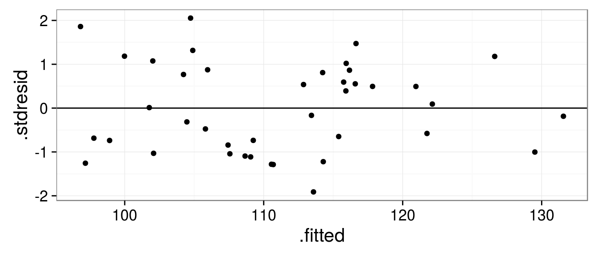
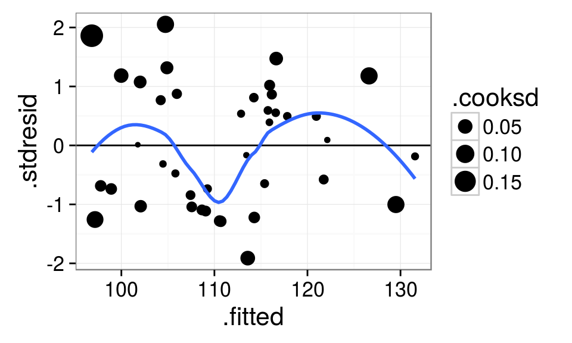
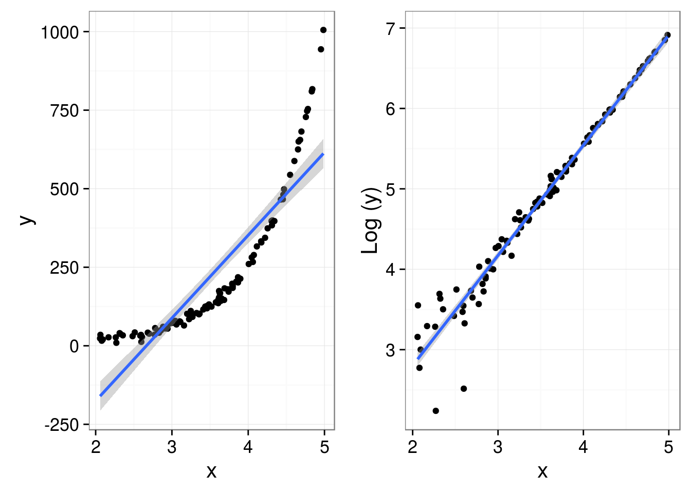
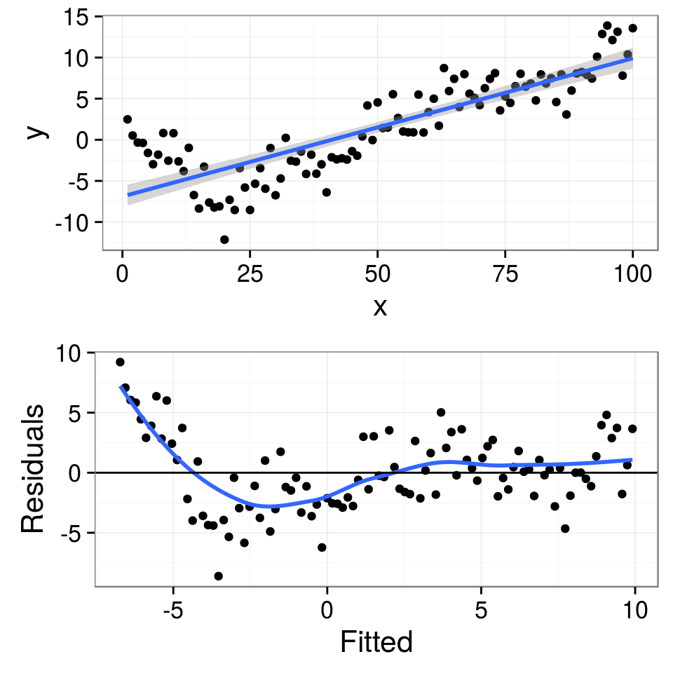
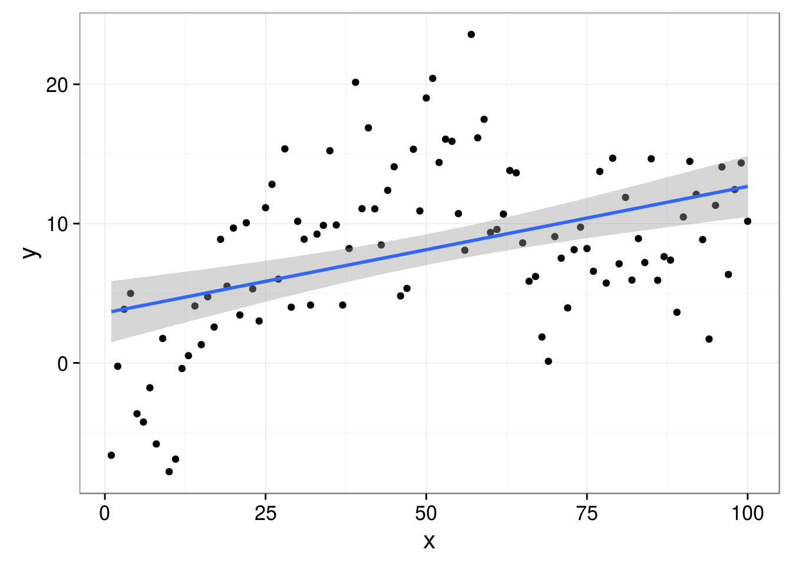
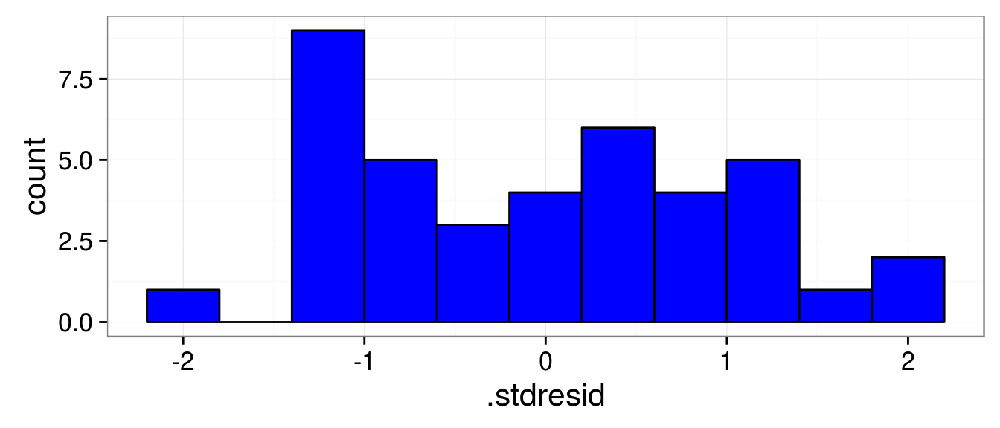
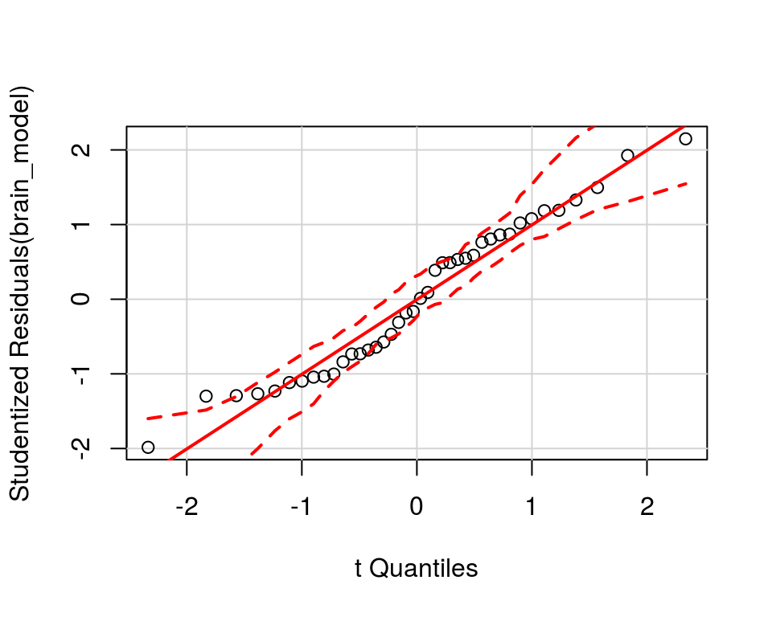
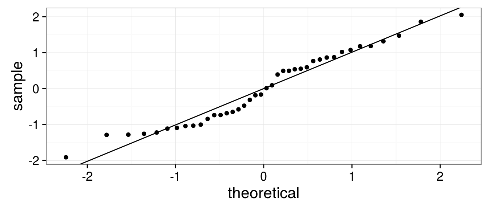
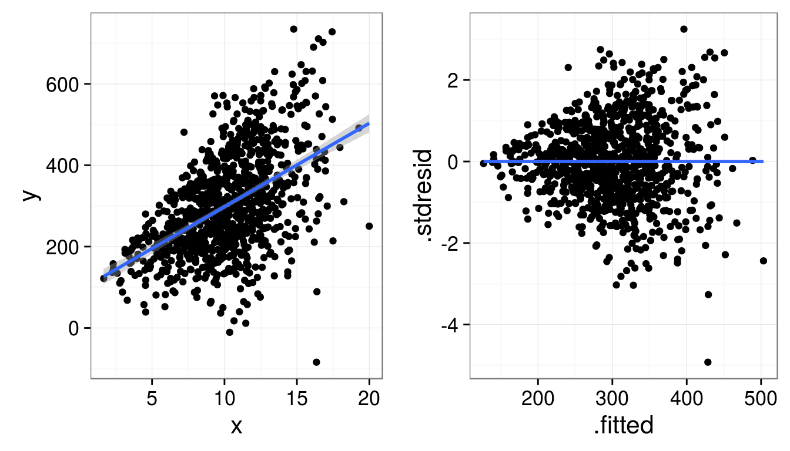
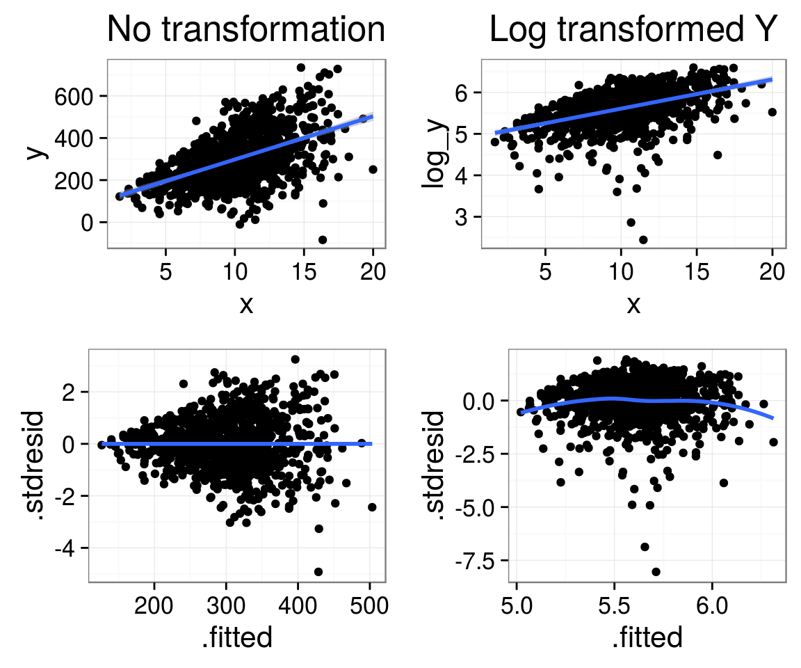

- Диагностика линейных моделей
Мы рассмотрим
Зависит ли уровень интеллекта от размера головного мозга?
С этим примером мы познакомились в прошлый раз.
- Было исследовано 20 девушек и 20 молодых людей
- У каждого индивида определяли биометрические параметры: вес, рост, размер головного мозга (количество пикселей на изображении ЯМР сканера)
- Интеллект был протестирован с помощью IQ тестов
Пример взят из работы: Willerman, L., Schultz, R., Rutledge, J. N., and Bigler, E. (1991), "In Vivo Brain Size and Intelligence," Intelligence, 15, 223-228.
Данные представлены в библиотеке "The Data and Story Library" http://lib.stat.cmu.edu/DASL/

Посмотрим на датасет
brain <- read.csv("data/IQ_brain.csv", header = TRUE)
head(brain)
## Gender FSIQ VIQ PIQ Weight Height MRINACount ## 1 Female 133 132 124 118 64.5 816932 ## 2 Male 140 150 124 NA 72.5 1001121 ## 3 Male 139 123 150 143 73.3 1038437 ## 4 Male 133 129 128 172 68.8 965353 ## 5 Female 137 132 134 147 65.0 951545 ## 6 Female 99 90 110 146 69.0 928799
Подберем модель, наилучшим образом описывающую зависимость результатов IQ-теста от размера головного мозга
brain_model <- lm(PIQ ~ MRINACount, data = brain) brain_model
## ## Call: ## lm(formula = PIQ ~ MRINACount, data = brain) ## ## Coefficients: ## (Intercept) MRINACount ## 1.74376 0.00012
Анализ остатков линейных моделей
Проверка на наличие влиятельных наблюдений
Проверка условий применимости линейных моделей
- Линейность связи между зависимой перменной (\(Y\)) и предикторами (\(X\))
- Независимость \(Y\) друг от друга
- Нормальное распределение \(Y\) для каждого уровня значенй \(X\)
- Гомогенность дисерсии \(Y\) в пределах всех уровней значений \(X\)
- Отсутствие коллинеарности предикторов (для можественной регрессии)
Первый этап диагностики линейных моделей - это проверка на наличие влиятельных наблюдений
Влиятельные наблюдения - наблюдения, вносящие слишком большой вклад в оценку парметров (коэффициентов) модели.

Из кн. Quinn & Keugh, 2002
Сначала научимся извлекать из результатов необходимые сведения:
Для этого служит функция fortify() из пакета {ggplot2}
require(ggplot2) brain_diag <- fortify(brain_model) head(brain_diag, 2)
## PIQ MRINACount .hat .sigma .cooksd .fitted .resid .stdresid ## 1 124 816932 0.0664 20.9 0.049838 100 24.02 1.1840 ## 2 124 1001121 0.0669 21.3 0.000304 122 1.87 0.0921
Уже знакомые:
.fitted - предсказанные значения.resid - остатки
Новые величины, которые нам понадобятся:
.hat - "воздействие" данного наблюдения (leverage).cooksd - расстояние Кука.stdresid - стандартизованные остатки
Типы остатков
Просто остатки: \[e_i = y_i - \hat{y_i}\]
Стандартизованные остатки: \[\frac{e_i}{\sqrt{MS_{Residual}}}\]
Стьюдентовские остатки: \[\frac{e_i}{\sqrt{MS_{Residual}(1-h_i)}}\]
Последние удобнее, так как можно сказать какие остатки большие, а какие маленькие при сравнении разных моделей
Воздействие точек \(h_i\), .hat (Leverage)

Эта велична, показывает насколько каждое значение \(x_i\) влияет на ход линии регрессии, то есть на \(\hat{y_i}\)
- Точки, располагающиеся дальше от \(\bar{x}\), оказывают более сильное влияние на \(\hat{y_i}\)
- Эта величина, в норме, варьирует в промежутке от \(1/n\) до 1
- Если \(h_i > 2(p/n)\), то надо внимательно посмотреть на данное значение
- Удобнее другая величина - расстояние Кука
Расстояние Кука (Cook's distance)
Описывает как повлияет на модель удаление данного наблюдения
\[D_i = \frac{\sum{(\hat{y_j}-\hat{y}_{j(i)})^2}}{pMSE}\] \(\hat{y_j}\) - значение предсказанное полной моделью
\(\hat{y}_{j(i)}\) - значение, предказанное моделью, построенной без учета \(i\)-го значения предиктора
\(p\) - количество параметров в модели
\(MSE\) - среднеквадратичная ошибка модели
Расстояние Кука одновременно учитывает величину остатков по всей модели и влиятельность (leverage) отдельных точек
- Распределение статистики \(D_i\) близко к F-распределению
- Если расстояние Кука \(D_i > 1\), то данное наблюдение можно рассматривать как выброс (outlier)
- Для более жесткого выделения выбросов используют пороговую величину, зависящую от объема выборки \(D_i > 4/(N − k − 1)\).
N - Объем выборки, k - число предикторов.
Задание
Для модели brain_model постройте график рссеяния стандартизированных остатков в зависимости от предсказанных значений
Hint: вспомните, что мы уже получили датафрейм brain_diag
Решение
ggplot(data = brain_diag, aes(x = .fitted, y = .stdresid)) + geom_point() +
geom_hline(aes(yintercept = 0))

Внесем некоторые дополнения
ggplot(data = brain_diag, aes(x = .fitted, y = .stdresid)) + geom_point(aes(size = .cooksd)) + geom_hline(yintercept = 0) + geom_smooth(method="loess", se=FALSE)

Что мы видим?
- Большая часть стандартизованных остатков в пределах двух стандартных отклонений.
- Есть одно влиятельное наблюдение, которое нужно проверить, но сила его влияния невелика.
- Среди остатков нет тренда.
- Но есть иной паттерн!
Что делать с влиятельными наблюдениями?
Метод 1. Удаление влиятельных наблюдений
Будьте осторожны! Отскакивающие значения могут иметь важное значение. Удалять следует только очевидные ошибки в наблюдениях.
После их удаления необходимо пересчитать модель.
Что делать с влиятельными наблюдениями?
Метод 2. Преобразование переменных
Наиболее частые преобразования, используемые для построения линейных моделей
| Трансформация | Формула |
|---|---|
| -2 | \(1/Y^2\) |
| -1 | \(1/Y\) |
| -0.5 | \(1/\sqrt(Y)\) |
| логарифмирование | \(log(Y)\) |
| логит | \(ln(\frac{Y}{1-Y})\) |
Условия применимости линейных моделей (Assumptions)
1. Линейность связи
Нелинейные зависимости не всегда видны на исходных графиках в осях Y vs X
Они становятся лучше заметны на графиках рассеяния остатков (Residual plots)

Что делать, если связь нелинейна?
- Можно применить линеаризующее преобразование
- Можно построить нелинейную модель (об этом будем говорить отдельно)
Пример линеаризующего преобразования

2. Независимость \(Y\) друг от друга
- Каждое значение \(Y_i\) должно быть независимо от любого \(Y_j\)
- Это должно контролироваться на этапе планирования сбора матриала
- Наиболее частые источники зависимостей:
- псевдоповторности
- временные и пространственые автокорреляции
- псевдоповторности
- Взаимозависимоти могут проявляться на графиках рассеяния остатков (Residual plots)
Симулированный пример: Автокоррелированные данные.

Критерий Дарбина-Уотсона: Формальный тест на автокорреляцию
library(car) brain_model <- lm(PIQ ~ MRINACount, data = brain) durbinWatsonTest(brain_model)
## lag Autocorrelation D-W Statistic p-value ## 1 0.229 1.47 0.102 ## Alternative hypothesis: rho != 0
Симулированный пример: Автокоррелированные данные.
Данные имеют ярко выраженную автокорреляцию 
lm_autocor <- lm(y ~ x, data = dat) durbinWatsonTest(lm_autocor)
## lag Autocorrelation D-W Statistic p-value ## 1 0.467 1.03 0 ## Alternative hypothesis: rho != 0
3. Нормальное распределение \(Y\) для каждого уровня значенй \(X\)

 * \(Y_i \sim N(\mu_{y_i}, \sigma^2)\) * В идеале, каждому \(X_i\) должно соответствовать большое количество наблюдений \(Y\) * На практике такое бывает только в случае моделей с дискретными предикторами * Соответствие нормальности распределения можно оценить по "поведению" случайной части модели.
* \(Y_i \sim N(\mu_{y_i}, \sigma^2)\) * В идеале, каждому \(X_i\) должно соответствовать большое количество наблюдений \(Y\) * На практике такое бывает только в случае моделей с дискретными предикторами * Соответствие нормальности распределения можно оценить по "поведению" случайной части модели.
Фиксированная и случайная часть модели
\[y_i = \beta_0 + \beta_1x_i + \epsilon_i\]
- Фиксированная часть: \(y_i = \beta_0 + \beta_1x_i\) задает жесткую связь между \(x_i\) и \(y_i\)
- Случайная часть: \(\epsilon_i\)
- Так как \(y_i - \beta_0 - \beta_1x_i = 0\), то \(\epsilon_i \sim N(0, \sigma^2)\)
- Если с моделью все ОК, то условие нормального распределения остатков должно соблюдаться
Можно построить частотное распределение остатков
ggplot(brain_model, aes(x = .stdresid)) + geom_histogram(binwidth = 0.4,
fill = "blue", color = "black")

На частотной гистограмме остатков НЕ ВСЕГДА хорошо видны отклонения от нормальности
Проверка нормальности распределения остатков с помощью нормальновероятностного графика стандартизованных остатков
library(car) qqPlot(brain_model)

Квантиль - значение, которое заданная случайная величина не превышает с фиксированной вероятностью.
Если точки - это случайные величины из \(N(0, \sigma^2)\), то они должны лечь вдоль прямой \(Y=X\)
Все то же самое с использоваением возможностей ggplot
mean_val <- mean(brain_diag$.stdresid)
sd_val <- sd(brain_diag$.stdresid)
ggplot(brain_diag, aes(sample = .stdresid)) + geom_point(stat = "qq") +
geom_abline(intercept = mean_val, slope = sd_val)

Мы видим, что отклонения от нормальности есть!
Но! Метод устойчив к небольшим отклонениям от нормальности.
4. Постоянство дисперсии - гомоскедастичность
Это самое важное ограничивающее условие!
Многие тесты чувствительны к гетероскедастичности.

Формальные тесты на гетероскедастичность
- Для линейных моделей с непрерывным предиктором применяется, например, тест Бройша-Пагана (Breusch-Pagan test)
- Для моделей с дискретными предикторами чаще применяют тест Кокрана (Cochran test)
library(lmtest) #Симулированные данные bptest(y ~ x, data = dat)
## ## studentized Breusch-Pagan test ## ## data: y ~ x ## BP = 90, df = 1, p-value <2e-16
#Реальные данные bptest(PIQ ~ MRINACount, data = brain)
## ## studentized Breusch-Pagan test ## ## data: PIQ ~ MRINACount ## BP = 3, df = 1, p-value = 0.1
Что делать если вы столкнулись с гетероскедастичностью?
Решение 1. Применить преобразование зависимой переменной (в некоторых случаях и предиктора).

Что делать если вы столкнулись с гетероскедастичностью?
Решение 1. Применить преобразование зависимой переменной (в некоторых случаях и предиктора).
Недостатки:
- Не всегда спасает.
- Модель описывает поведение не исходной, а преобразованной величины. "Если вы не можете доказать А, докажите В и сделайте вид, что это было А" (Кобаков, 2014)
Что делать если вы столкнулись с гетероскедастичностью?
Решение 2. Построить более сложную модель, которая учитывала бы гетерогенность дисперсии зависимой перменной.
"Welcome to our world, the world of mixed effects modelling."(Zuur et al., 2009)
Об этом речь впереди!
Некоторые распространенные паттерны на диаграммах рассеяния остатков

из Logan, 2010, стр. 174
- Случайное рассеяние остатков. Гомогенность дисперсии и линейность соблюдаются. Модель хорошая!
- Клиновидный паттерн. Есть гетероскедастичность. Модель плохая!
- Остатки рассеяны равномерно, но модель неполна. Нужны дополниетльные предикторы. Модель можно улучшить!
- Нелинейнй паттерн сохранился. Линейная модель применена некорректно. Модель плохая!
Можно автоматически проверить соблюдение условий применимости с помощью средств R
HO будьте осторожны!
library(gvlma) gvlma(brain_model)
## ## Call: ## lm(formula = PIQ ~ MRINACount, data = brain) ## ## Coefficients: ## (Intercept) MRINACount ## 1.74376 0.00012 ## ## ## ASSESSMENT OF THE LINEAR MODEL ASSUMPTIONS ## USING THE GLOBAL TEST ON 4 DEGREES-OF-FREEDOM: ## Level of Significance = 0.05 ## ## Call: ## gvlma(x = brain_model) ## ## Value p-value Decision ## Global Stat 2.459 0.652 Assumptions acceptable. ## Skewness 0.121 0.728 Assumptions acceptable. ## Kurtosis 1.849 0.174 Assumptions acceptable. ## Link Function 0.100 0.751 Assumptions acceptable. ## Heteroscedasticity 0.388 0.533 Assumptions acceptable.
Задание: Выполните три блока кода (см. код лекции).
Какие нарушения условий применимости линейных моделей здесь наблюдаются?
Что нужно писать в тексте статьи по поводу проверки валидности моделей?
- Вариант 1. Привести электронные дополнительные материалы с необходимыми графиками.
- Вариант 2. Привести в тексте работы результаты применения тестов на гомогеность дисперси, автокоррелированность (если используются пространственые или временные предикторы) и нормальность распределиня остатков.
- Вариант3. Написать в главе "Материал и методика" фразу вроде такой: "Визуальная проверка графиков рассяния остатков не выявила заметных отклонений от условий равенства дисперсий и нормальности".
Summary
- Не любая модель с достверными результатами проверки \(H_0\) валидна.
- Обязательный этап работы с моделями - проверка условий применимости.
- Наиболее важную информацию о валидности модели дает анализ остатков.
Что почитать
- Кабаков Р.И. R в действии. Анализ и визуализация данных на языке R. М.: ДМК Пресс, 2014.
- Quinn G.P., Keough M.J. (2002) Experimental design and data analysis for biologists, pp. 92-98, 111-130
- Diez D. M., Barr C. D., Cetinkaya-Rundel M. (2014) Open Intro to Statistics., pp. 354-367.
- Logan M. (2010) Biostatistical Design and Analysis Using R. A Practical Guide, pp. 170-173, 208-211
- Legendre P., Legendre L. (2012) Numerical ecology. Second english edition. Elsevier, Amsterdam.